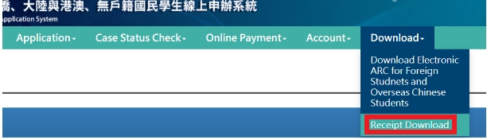

I WANT TO APPLY WORK PERMIT
Work Permit (工作證 / gōngzuòzhèng)

In Taiwan, students are allowed to work part-time by meeting the requirements and regulations of the government. To work, students must have a work permit.
- Link for work permit registration: EZ Work Taiwan (https://ezwp.wda.gov.tw/)
- Required documents:
1. Scan passport
2. Scan student ID
3. Scan ARC (front and back)
4. Other documents requested by respective schools (may be asked to the department office/student office)
- Maximum working hours is 20 hours per week, except during summer and winter holidays.
- Work permits can be received in 2 forms, namely electronic form, and physical form.
1. Electronic form will be sent via email (can be printed)
2. The physical form the applicant must take a work permit from the student office of each university.
Work permit validity period:
1. If you register in semester 1, the permit will be valid until March 31
1. If you apply in semester 2, the permit will be valid until September 30
-If the validity period has expired, there is no renewal, but must create a new one with the steps in point B
Required documents (online registration)
-Passport (still valid for at least 6 months)
-Resident Visa
-Color photograph (white background)
-Admission Letter
-Proof of residence in Taiwan (if you live in a dorm, you can ask for from of each school)
-(School Attendance Certificate)
-(for Overseas Chinese Student)
-Proof of scholarship (for International Students who receive scholarships)
HOW TO REGISTER A NEW ACCOUNT (For those who don't have an account yet)
1.After logging into the web https://ezwp.wda.gov.tw , click "Online Application"
2. Clik “Work Permit for Foreign Students,Overseas Chinese Students and Ethnic Chinese Students”
3. Clik “Apply for an account” “Register”
4. Fill data and click “Confirm”

STEPS TO REGISTER FOR A WORK PERMIT:
(Repeat this step when the Work Permit is no longer valid (must create a new one)
1. After logging in to the web https://ezwp.wda.gov.tw , click “Work Permit for Foreign Students, Overseas Chinese Students and Ethnic Chinese Students”
2. After that enter the account data number and click "Sign In"
3. Click "Case Management > "Add Students' Applications". Then the web to add registration will appear.
4.Select the work permit receipt method, “Agree” for electronic form (sent to email) and “Disagree” for physical form (must be picked up)
5.Completely fill out any requested data 
6. Payment can be made via post office, ATM, or Taiwan Pay. After making a payment, enter the requested payment data.

After submitting, you may inform the office of your school department that you have registered for a work permit and ask them to check and send it to the office of the management concerned.